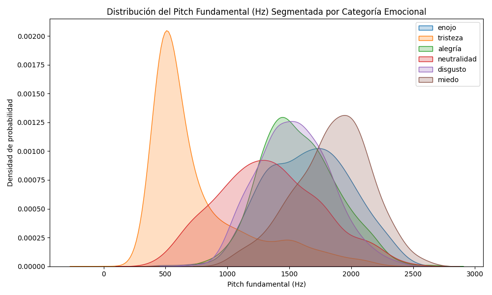
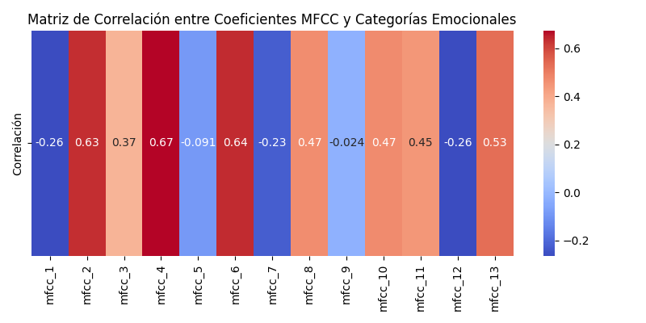
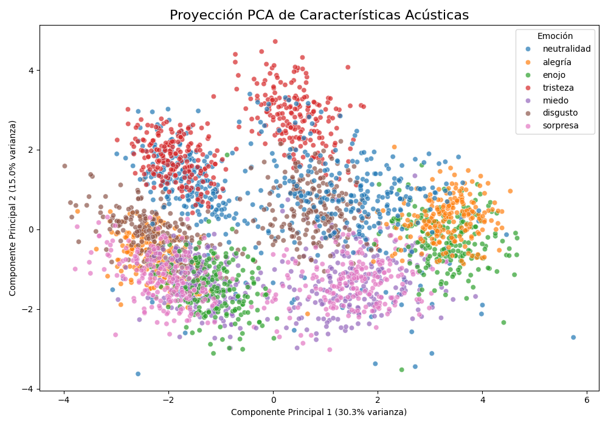
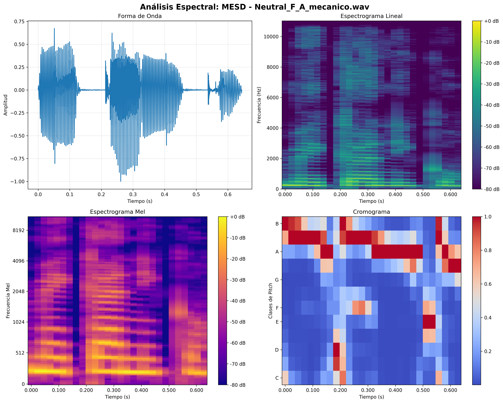

Analizador de Emociones por Voz mediante Inteligencia Artificial
Propuesta de Proyecto para el Desarrollo de Asistente Psicológico Digital
Democratizando el acceso a herramientas de evaluación psicológica preliminar
Equipo de Desarrollo
Alejandro Pérez
Yusmany Rejopachi
Jair Gutiérrez
1. Justificación Técnica
¿Por qué Audio para Reconocimiento Emocional?
La voz humana contiene información emocional rica y multidimensional que trasciende las palabras
Características Prosódicas
Pitch, intensidad, velocidad y ritmo revelan estados emocionales
Patrones Espectrales
Distribución de frecuencias única para cada emoción
No Invasivo
Captura natural sin intervención física o psicológica
¿Por qué Inteligencia Artificial?
- Procesamiento automático: Extracción de patrones complejos indetectables por análisis humano
- Objetividad: Eliminación de sesgos subjetivos en la evaluación emocional
- Escalabilidad: Análisis masivo de datos con consistencia temporal
- Precisión espectral: Capacidad de detectar micropatrones en el dominio tiempo-frecuencia
2. Descripción del Problema
Problema Principal
Falta de herramientas automatizadas, objetivas y accesibles para la evaluación preliminar del estado emocional
¿Qué pretendemos resolver?
- Modelo capaz de analizar grabaciones de voz
- Identificar patrones emocionales: felicidad, tristeza, ira, miedo, sorpresa, disgusto, neutralidad
- Procesar audio en español mexicano
- Evaluación emocional confiable para contextos clínicos, educativos y de bienestar
3. Objetivo General
Desarrollar un modelo de inteligencia artificial capaz de reconocer y clasificar emociones humanas a partir del análisis acústico y prosódico del habla, con el propósito de crear una herramienta de evaluación emocional preliminar que pueda servir como base para un asistente psicológico digital.
4. Objetivos Específicos
1. Integrar y preprocesar múltiples conjuntos de datos de audio emocional
2. Extraer y analizar características acústicas relevantes del habla emocional
3. Diseñar, entrenar y optimizar modelos especializados de aprendizaje automático
4. Evaluar el rendimiento utilizando métricas estándar de clasificación
5. Implementar técnicas de reducción de dimensionalidad y visualización
5. Metodología
Enfoque de desarrollo iterativo y adaptativo:
Adquisición de Datos
Recolección y consolidación de datasets
↓
Análisis Exploratorio
Comprensión profunda de los datos
↓
Preprocesamiento
Limpieza y preparación de señales
↓
Extracción de Características
Identificación de patrones discriminativos
↓
Entrenamiento del Modelo
Desarrollo y optimización
↓
Evaluación
Validación y mejora continua
Retroalimentación e iteración según resultados
6. Adquisición de Conjuntos de Datos
Conjunto 1: Base de Datos de Habla Emocional Mexicana (MESD)
- Cantidad: 864 grabaciones de audio
- Características: Español mexicano, 6 emociones + neutralidad
- Utilidad: Adaptación específica al habla mexicana
Conjunto 2: Audio de Habla Emocional RAVDESS
- Cantidad: 1,440 grabaciones vocales
- Características: Calidad profesional, 24 actores
- Utilidad: Benchmarks robustos de rendimiento
Conjunto 3: Reconocimiento de Emociones en Habla (EN)
- Cantidad: 2,800 muestras de audio
- Características: Situaciones naturales y espontáneas
- Utilidad: Generalización a uso del mundo real
7. Análisis Exploratorio de Datos (EDA)
Preguntas principales de investigación:
- ¿Existen diferencias espectrales consistentes entre estados emocionales?
- ¿Cómo varían las características prosódicas entre emociones?
- ¿Qué nivel de variabilidad existe dentro de cada categoría?
- ¿Hay sesgos demográficos o técnicos en los conjuntos de datos?
Visualizaciones Seleccionadas:
1. Histogramas de Características Prosódicas
2. Mapas de Calor de Correlación Espectral
3. Gráficos de Dispersión de Componentes Principales
8. Visualización de Características Acústicas
1. Distribución del Pitch Fundamental por Emoción

¿Qué muestra? La distribución del pitch fundamental (frecuencia de la voz) para cada emoción. Se observa que emociones como alegría y enojo tienden a tener un pitch más alto, mientras que la tristeza se concentra en valores bajos. Esto ayuda a diferenciar emociones a partir de la voz.
2. Matriz de Correlación entre MFCC y Emociones

¿Qué muestra? El grado de correlación entre los coeficientes MFCC (características espectrales de la voz) y las emociones. Los colores indican si un MFCC está más asociado a una emoción específica, guiando la selección de características para el modelo.
3. Proyección PCA de Características Acústicas

¿Qué muestra? Una reducción de dimensionalidad (PCA) de las características acústicas, donde cada punto es una grabación y el color indica la emoción. Permite visualizar qué tan separables son las emociones en el espacio de características.
9. Preprocesamiento de Datos
Normalización de Audio
Antes:
Diferentes formatos y calidades
→
Después:
16 kHz, 16 bits estándar
Eliminación de Datos Corruptos
Antes:
Archivos dañados o muy cortos
→
Después:
Solo archivos válidos >1s
Filtrado de Ruido
Antes:
Ruido de fondo presente
→
Después:
Señal limpia y clara
Segmentación Temporal
Antes:
Grabaciones de duración variable
→
Después:
Ventanas de 2-4s con solapamiento
9. Reducción de Dimensionalidad
¿Por qué es útil?
- Mitigar la "maldición de la dimensionalidad"
- Mejorar la eficiencia computacional
- Reducir el riesgo de sobreajuste
- Facilitar la visualización e interpretación
Técnicas a aplicar:
Análisis de Componentes Principales (PCA)
Identificar direcciones de máxima varianza
Análisis Discriminante Lineal (LDA)
Maximizar separación entre clases emocionales
t-SNE
Visualización de estructuras complejas
UMAP
Preservar estructura local y global
10. Fundamento Teórico
Algoritmo Principal: Redes Neuronales Convolucionales (CNN)
Las CNN procesan espectrogramas de audio como imágenes bidimensionales, detectando patrones espacio-temporales característicos de diferentes estados emocionales.
Justificación de uso:
- Los patrones emocionales se manifiestan como estructuras espacio-temporales
- Casos de éxito documentados: Zhao et al. (2019) - 85% de precisión
- Invariancia traslacional para diferentes tiempos de expresión
- Capacidad de generalización jerárquica
Ventajas y Limitaciones:
Ventajas
- Extracción automática de características
- Robustez ante variaciones locales
- Escalabilidad computacional
- Interpretabilidad parcial
Limitaciones
- Dependencia de grandes volúmenes de datos
- Sensibilidad a la calidad del preprocesamiento
- Interpretabilidad limitada
- Posible sesgo hacia características específicas
11. Análisis Espectral: Procesamiento de Datos por CNN
Ejemplo de cómo las CNN procesan las diferentes representaciones espectrales del audio emocional

🌊 Forma de Onda
Superior izquierda: Representa la amplitud de la señal de audio a lo largo del tiempo. Las variaciones muestran la intensidad vocal y patrones de entonación característicos del habla emocional neutra.
📊 Espectrograma Lineal
Superior derecha: Visualización tiempo-frecuencia que muestra cómo se distribuye la energía espectral. Los colores cálidos indican mayor energía en esas frecuencias específicas durante momentos particulares.
🎵 Espectrograma Mel
Inferior izquierda: Representación perceptualmente relevante que imita cómo el oído humano procesa las frecuencias. Las bandas Mel capturan características espectrales cruciales para el reconocimiento emocional.
🎹 Cromograma
Inferior derecha: Análisis de las clases de pitch (Do, Re, Mi...) presentes en la voz. Revela patrones tonales que pueden ser distintivos para diferentes estados emocionales.
¿Cómo procesan esto las CNN? Cada representación proporciona información complementaria que los filtros convolucionales capturan automáticamente, creando mapas de características que identifican patrones emocionales únicos.
12. Arquitectura de la Red Neuronal
↓
Capa Convolucional 1
32 filtros, kernel 3x3, ReLU
Proceso: Detección de patrones locales básicos
↓
MaxPooling 1
Pool size 2x2
Proceso: Reducción dimensional y extracción de características dominantes
↓
Capa Convolucional 2
64 filtros, kernel 3x3, ReLU
Proceso: Detección de patrones más complejos
↓
Capa Densa
128 neuronas, ReLU, Dropout 0.3
Proceso: Combinación de características para decisión final
↓
Salida
7 neuronas, Softmax
Proceso: Clasificación probabilística de emociones
13. Recursos
Lenguaje y Frameworks
- Python 3.8+: Lenguaje principal
- TensorFlow 2.x/Keras: Desarrollo de CNN
- Librosa: Procesamiento especializado de audio
- Scikit-learn: Preprocesamiento y métricas
Hardware y Plataformas
- Google Colab Pro: GPUs Tesla T4/V100
- Jupyter Notebook: Desarrollo local
- GitHub: Control de versiones
- Weights & Biases: Monitoreo de entrenamiento
14. Alcance del Proyecto
Incluido en el Proyecto
- Modelo completo de reconocimiento de 7 emociones
- Pipeline completo de carga a evaluación
- Procesamiento de audio WAV (1-10 segundos)
- API de clasificación con puntuaciones de confianza
- Métricas completas de rendimiento
Limitaciones y Exclusiones
- Solo análisis de audio (sin video/texto)
- Sin aplicación web completa
- Sin procesamiento en tiempo real inicial
- Sin evaluación clínica formal
- Sin diagnóstico médico o recomendaciones
¡Gracias!
Esperamos que esta propuesta haya demostrado el potencial de la inteligencia artificial
para democratizar el acceso a herramientas de evaluación emocional.
🤔 ¿Preguntas o Comentarios?
Estamos aquí para resolver cualquier duda sobre el proyecto
y discutir las posibilidades de implementación.